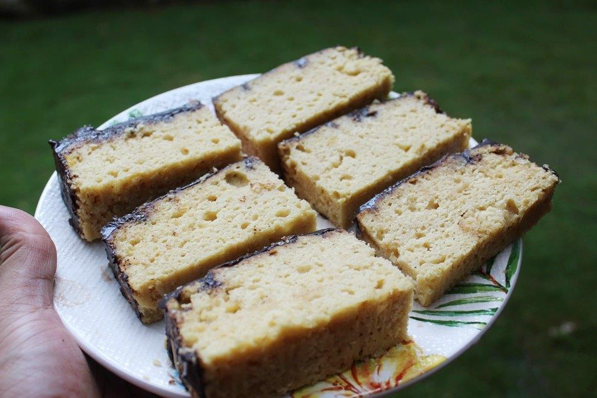

Chocolate-Glazed Honey Cake

Description
This traditional honey cake is made every by most jewish homes for the jewish new year Rosh Hashanah.
The honey cake is eaten to have a sweet new. The cake is a little dry and is best served with tea.
Ingredients
Cake:
- 4 cups all-purpose flour
- 1½ cups white sugar
- 1 cup honey
- 3 large eggs
- ½ cup vegetable oil
- ½ cup brewed coffee
- 1 tablespoon jam (any flavor)
- 1 tablespoon baking powder
- 1 teaspoon ground cinnamon
- ½ teaspoon ground cloves
- ¼ teaspoon baking soda
Chocolate Glaze:
- 1/2 cup white sugar
- 1/4 cup usweetened cocoa powder
- 3 1/2 tablespoons water
- 1 teaspoon all-purpose flour
- 1/2 cup margarine
- 1 tablespoon brandy
Steps
- Preheat oven to 325 degrees F (165 degrees C). Lightly grease two 8x3-inch loaf pans.
- AMix 4 cups flour, 1 1/2 cups sugar, honey, eggs, oil, coffee, jam, baking powder, cinnamon, cloves,
and baking soda together in a bowl until smooth; spread evenly into the prepared loaf pans
- Bake in the preheated oven until a knife inserted in the center comes out clean, about 1 hour.
Remove cake from pans and cool on a wire rack.
- Mix 1/2 cup sugar, cocoa powder, water, and 1 teaspoon flour together, stirring constantly,
in a saucepan over low heat until mixture is smooth and thick, about 8 minutes. Remove saucepan from heat and add margarine and brandy;
whisk until glaze is thickened. Refrigerate glaze until cooled, at least 15 minutes
- Spread glaze over cooled cakes.